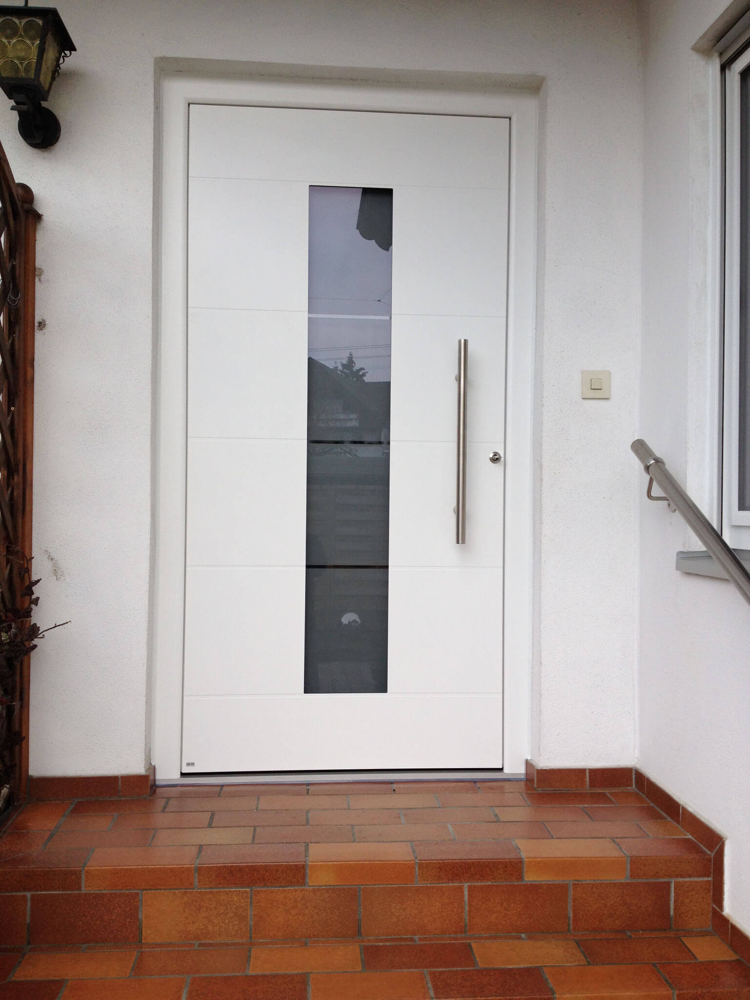
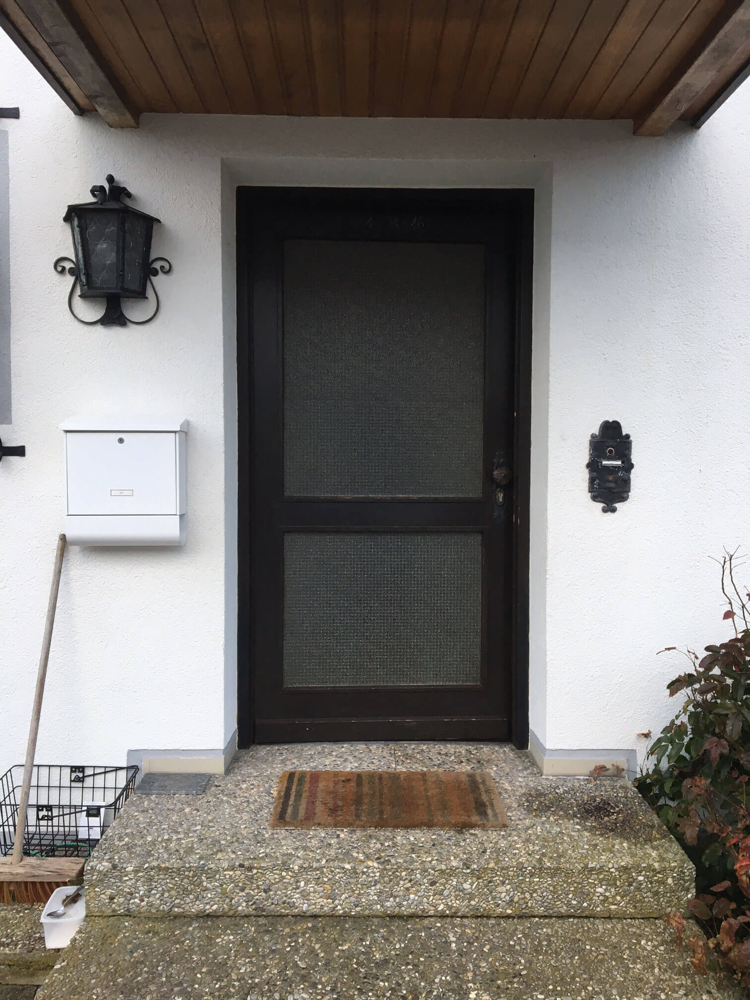
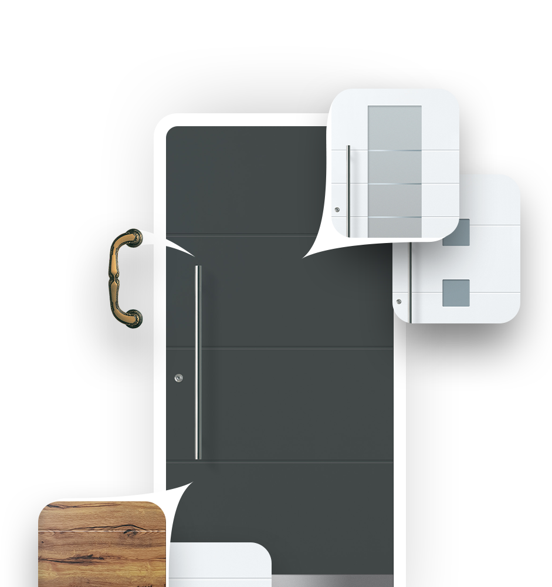

Referenzen
Die Verwandlung — sehen Sie selbst
Schieberegler hin und her ziehen zum Vergleichen.


⇔


⇔


⇔
Ihre Haustüre ist die Visitenkarte Ihres Hauses. Von klassisch bis modern — wir haben für jeden Geschmack das richtige Modell.
Ihre Zwick Haustüre ist vielen Profilen weit überlegen — insbesondere bei der Wärmedämmung. Außerdem verdient alles was Ihnen lieb und teuer ist besten Schutz. Ein Einbruch ist schnell passiert — unsere Türen machen es Einbrechern so schwer wie möglich.
Kostenlos per E-Mail erhalten:
Wählen Sie Farbe, Glas, Beschlag und Sicherheitsstufe — und erhalten Sie unverbindlich einen Preis.
Jetzt konfigurieren →
Schieberegler hin und her ziehen zum Vergleichen.


„Letzten Sommer haben wir uns ausgesperrt — der Schlüsseldienst war nicht in der Lage, unsere neue ZWICK-Haustüre zu öffnen! Das zeigt wie sicher die Tür wirklich ist."
„Sehr gute Beratung. Wir konnten uns die Türe nach unseren Vorstellungen zusammenstellen. Wichtig war für uns der Sicherheitsaspekt — wurde perfekt umgesetzt."
„Möchte mich für die sehr gute Beratung bedanken. Wir sind sehr zufrieden mit dieser Tür. Dem freundlichen Mitarbeiter ein Lob für die perfekte Arbeit!"
Alle Produkte zum Anfassen — Fenster, Haustüren, Wintergärten und Vordächer.
Persönliche Beratung nach Terminvereinbarung in Affing-Mühlhausen.